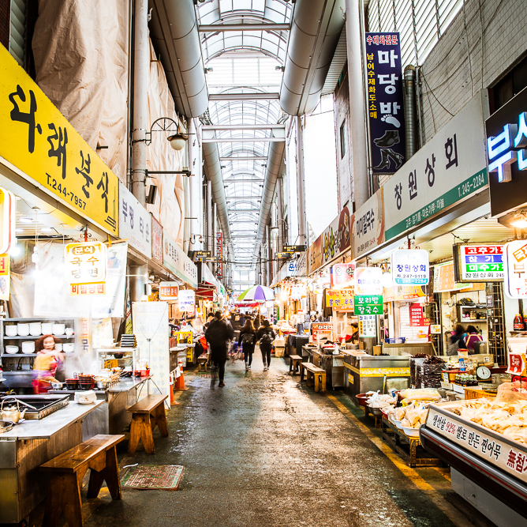

행사기간
20.02.28 ~ 20.02.29
행사내용
행사 기간은 이달 28일부터 추석 연휴 전날인 9월 11일까지 보름간이다. 광장시장(종로구)과 신중부시장(중구), 동부골목시장(중랑구), 돈암시장(성북구), 송화골목시장(강서구), 구로시장(구로구), 청과시장(영등포구), 신사시장(관악구), 영동전통시장(강남구) 등 132개 재래시장이 참여한다. 이곳에서는 추석 제수용품과 농수축산물을 최대 80% 할인된 가격으로 판매한다. 문정동로데오상가(송파구)에서는 의류·신발 등 추석빔을 최대 80%, 청량리종합도매시장(동대문구)·방이시장(송파구) 등에서는 축산물과 과일 등을 최대 50%까지 저렴하게 판매한다.